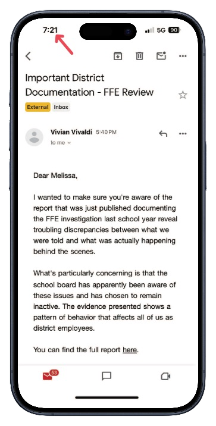

How FCS Administrators Destroyed Public Records and Attempted to Cover Their Tracks
Editorial Note
The anonymous sender’s familiarity with FCS internals and their fear of retaliation point strongly to an employee going to lengths to protect themselves while sharing critical insights.
Last week, I received an anonymous message from someone I believe to be a Findlay City Schools (FCS) employee. The sender reached out with a wealth of details—specifics about district operations, union representation processes, staff fears of retaliation, the FFE investigation timeline, and even non-public administrative actions. Their depth of knowledge was striking, and it’s clear they wanted to shed light on the situation for colleagues and the community alike. This isn’t guesswork or speculation; the information they provided is factual, backed by concrete evidence—documents, emails, and records—supplied directly to them by FCS administrators themselves. Beyond their grasp of the details, they took careful steps to stay anonymous—showing both technical savvy and a real concern about reprisal if their identity slipped out. This correspondence landed in my hands with a purpose: to inform while staying in the shadows.
Records from an Anonymous FCS Employee Reveal Another Cover-Up in the FFE Investigation
When faced with the spread of information they didn't want public, Findlay City Schools administrators took drastic action - deliberately destroying public records across hundreds of employee email accounts, then attempting to cover their tracks with false claims about email security measures.
Through careful analysis of records obtained via public information requests, a clear picture emerges of what really happened on the evening of October 22, 2024, when administrators discovered their staff was learning about troubling revelations regarding the FFE investigation.
The Email That Sparked A Cover-Up
At 5:40 PM on October 22, an email was sent to FCS staff informing them about newly published documentation regarding the FFE investigation:
From the Anonymous Email Sent to FCS Teachers
I wanted to make sure you're aware of the report that was just published documenting the FFE investigation last school year reveal troubling discrepancies between what we were told and what was actually happening behind the scenes. "What's particularly concerning is that the school board has apparently been aware of these issues and has chosen to remain inactive. The evidence presented shows a pattern of behavior that affects all of us as district employees.
The email encouraged staff to reach out to union representatives if they had experienced similar situations, noting "I know there's fear about speaking up - we've all seen what can happen. That's exactly why working through union representation is so important."
The Timeline Exposes False Claims
FCS administrators would later claim this email was "immediately quarantined" as a security threat. An email from FCS Technology Director Justin Shank:

However, records show the email remained fully accessible and functional in staff inboxes for hours:
Normal Email Activity
This extended timeline of normal email functionality directly contradicts the district's claim of immediate quarantine.
| Time | Event | Source | Evidence Type |
|---|---|---|---|
| 5:40 PM | Original email sent from "Vivian Vivaldi" | Email metadata | Direct |
| 6:03 PM | Ben Kirian forwards email | Email records | Direct |
| 6:22 PM | Megan Simon forwards to Andy Hatton | Email records | Direct |
| 6:23 PM | Matthew Best forwards to Justin Shank | Email records | Direct |
| 7:23 PM | Melissa Heydinger takes screenshots | Screenshot metadata | Direct |
| 8:11 PM | Cheryl Obbish references email still being accessible | Email records | Direct |
The Email Was Not Malicious: Mailchimp’s Protocols Prevent Phishing
FCS administrators claimed the email sent to staff on October 22, 2024, was "immediately quarantined" as a security threat, suggesting it might have been a phishing attempt or malicious in nature. However, a closer inspection of the email’s content and delivery method reveals this claim doesn’t hold up—and Mailchimp’s rigorous pre-send inspection protocols further undermine the district’s narrative.
Examination of the Email
The email, sent at 5:40 PM from "Vivian Vivaldi," contained no hallmarks of a phishing or malicious message:
- No Suspicious Links or Attachments: The email included text urging staff to review a published report about the FFE investigation but did not contain hyperlinks, downloadable files, or prompts to enter credentials—common tactics in phishing attempts.
- Professional Tone and Context: It addressed staff directly about a legitimate workplace issue (the FFE investigation), encouraged union engagement, and referenced known district dynamics (e.g., fear of retaliation), aligning with internal concerns rather than external deception.
- No Technical Red Flags: Records show it was delivered via Mailchimp, a reputable email marketing platform, not a spoofed domain or unsecured server typical of malicious emails. Phishing emails typically aim to trick recipients into revealing sensitive information or installing malware, often through urgent language or fake credentials requests. This email, by contrast, sought to inform staff about documented discrepancies—hardly the intent of a cyberattack.
Phishing emails typically aim to trick recipients into revealing sensitive information or installing malware, often through urgent language or fake credentials requests. This email, by contrast, sought to inform staff about documented discrepancies—hardly the intent of a cyberattack.
Mailchimp’s Pre-Send Safeguards
Mailchimp’s Track Record
Mailchimp sends over 1 billion emails daily and maintains a 96-99% delivery rate, thanks to its robust anti-abuse systems (Mailchimp Stats). A phishing email slipping through is highly unlikely.
The email’s delivery through Mailchimp provides further evidence it wasn’t malicious. Mailchimp, a widely used platform for bulk email campaigns, employs strict content and security checks before allowing any send:
- Content Review: Mailchimp’s Acceptable Use Policy prohibits phishing, malware, or deceptive content. Their system reviews campaigns to ensure compliance, flagging and blocking suspicious emails before they’re sent.
- Sender Verification: Sender Verification: Mailchimp requires domain authentication and monitors for spoofing, ensuring the email originated from a legitimate Mailchimp account tied to "Vivian Vivaldi" (Mailchimp Authentication Guide).
- Abuse Prevention: Their automated systems detect abuse patterns (e.g., unsolicited phishing attempts), stopping non-compliant campaigns (Mailchimp Security Overview).
If the email had contained phishing elements or malicious code, Mailchimp’s protocols would have halted it pre-send. Its successful delivery to 215 FCS inboxes confirms it passed these stringent checks, contradicting the district’s security threat claim.
Implications for FCS’s Claims
With no trace of malicious intent and Mailchimp’s protections in place, the 'immediate quarantine' claim collapses as a deliberate deception. The email functioned normally for hours—forwarded, screenshotted, and accessed—because it wasn’t a threat requiring quarantine. FCS administrators’ assertion appears to be a pretext to justify deleting it later, not a genuine security response.
This evidence shifts the focus from a supposed cyber threat to the administrators’ actions—suggesting the deletion was a deliberate move to suppress information, not protect staff.
Technical Evidence Proves Deliberate Deletion
How Email Quarantine
Actually Works
- Happens instantly at receipt before delivery
- Prevents messages from reaching inboxes
- Blocks forwarding capability
- Generates automatic notifications
- Requires admin release process
- Creates detailed system logs
Google Workspace, which FCS uses for email, has a specific process for quarantining suspicious messages:
With email quarantine, Google Workspace admins can create settings that send incoming and outgoing email messages to a quarantine before they’re delivered to recipients (source)
None of these standard quarantine markers or restrictions were present. Instead, the evidence shows:
- Normal delivery to inboxes
- Full forwarding functionality
- Standard user access
- No quarantine notifications
- No release process
- Synchronized deletion hours later
This screenshot, taken at 7:21 PM, shows the email remained accessible in staff inboxes nearly two hours after FCS claimed it was "immediately quarantined."

Destruction of Public Records
By deliberately deleting these emails from 215 employee inboxes, FCS administrators likely violated multiple Ohio laws:
Ohio Revised Code § 149.351(A):
- Prohibits unauthorized destruction of public records
- Applies to all forms of electronic communication
- Each deletion constitutes separate violation
- No exemption for claimed security concerns
Ohio Revised Code § 2913.42:
- Tampering with government records
- Third-degree felony classification
- Each deletion as separate offense
- Intentional action demonstrated
Each deletion could constitute a separate violation, with serious consequences:
Potential Penalties
Civil Penalties:
- $1,000 per violation
- 215 violations = $215,000 potential civil forfeiture
Criminal Penalties:
- Third-degree felony under ORC § 2913.42
- Maximum $10,000 fine per violation
- Up to 36 months prison per violation
- Removal from public office possible
Hiding the Evidence
When asked to provide system logs that would prove exactly what happened to these emails, FCS has refused, claiming various exemptions:
Please be advised however that your [sic] request is denied to the extent you are seeking are considered “security records.” This includes, but is not limited to, any records containing “information directly used for protecting or maintaining the security” of the District, and the safety of its employees. All such records are specifically exempted from release. See R.C. 149.433.
Your [sic] request is also denied in part as some of the records you have requested do not exist and therefore have not been created, received, and/or kept by the District. R.C. 149.011(G); 149.43(A)(1). State ex rel. White v. Goldsberry, 85 Ohio St.3d 153, 154, 1999-Ohio-447 (a public office has “no duty under R.C. 149.43 to create new records.”). Additionally, the District has no obligation to identify those documents not produced or that do not exist, as this would amount to the creation of a privilege log, which the District has “no duty under R.C. 149.43 to submit.” State ex rel. Lanham v. DeWine, 135 Ohio St.3d 191, 2013-Ohio-199.
Additional records we were able to identify based on your [sic] request are enclosed. Please be advised that we incorporate all prior reasons for denial into this response.
Furthermore, your [sic] request is denied in part to the extent that it is overbroad. The Ohio Public Records Act “does not contemplate that any individual has the right to a complete duplication of voluminous files kept by government agencies.” State ex rel. Glasgow v. Jones, 2008-Ohio-4788, 119 Ohio St. 3d 391; see also DeCrane v. City of Cleveland, 2018-Ohio-3476, ¶ 10. Instead, Ohio law provides that a requester must identify the records that he or she is seeking “with reasonable clarity.” State ex rel. Glasgow v. Jones, 119 Ohio St.3d 391, 2008-Ohio-4788. In providing a response to a request, a public office is not required “to do research or to identify records containing selected information.” See State ex rel. Fant v. Tober, 8th Dist. Cuyahoga No. 63737, 1993 WL 173743, *1 (Apr. 28, 1993), aff'd, 68 Ohio St.3d 117 (1993); See also Gupta v. City of Cleveland, Ct. of Cl. No. 2017-00840PQ, 2018-Ohio-3475, ¶ 25 (holding requests for “entire categories of records” for multiple years is overly broad).
Your [sic] request is further denied in part to the extent it seeks information protected from release by state and/or federal law. For example, any records containing either the education records or the non-directory, personally identifiable information of students are not subject to release. 20 USC 1232g (FERPA); R.C. 3319.321. Any record that “directly relates” to a student is considered the educational record of that student and is therefore confidential. 34 C.F.R. § 99.3. Id. We have responded to your [sic] request with records we have been able to identify as responsive.
However, their denials notably fail to:
- Claim attorney-client privilege
- Show legal consultation
- Justify security exemption
- Explain missing records
- Address timeline contradictions
By withholding these system logs under a questionable "security records" exemption, FCS administrators are concealing the very evidence that would:
- Prove these were manual administrative deletions, not automated security measures
- Reveal the exact timeline contradicting their quarantine claims
- Identify which administrator ordered or executed the deletions
- Demonstrate that no quarantine was ever implemented
- Show complete email delivery and routing history
- Document exactly how many staff accounts were affected
Why It Matters
These aren't sensitive security protocols - they're basic email administration logs that would provide irrefutable technical proof of what really happened to these public records. FCS administrators' carefully worded denial of access to these logs, combined with their failure to cite any legal consultation about the deletions, suggests they understand exactly what this evidence would reveal.
Key Takeaways
The evidence demonstrates FCS administrators:
-
Deliberately Destroyed Public Records
- Synchronized deletion across 215 accounts
- No legal basis for removal
- Pattern of intentional concealment
-
Made False Claims
- Email was never quarantined
- Technical evidence proves normal function
- Timeline contradicts security narrative
-
Continue Cover-Up
- Withholding critical system logs
- Making unsupported exemption claims
- Providing misleading responses
-
Face Serious Consequences
- Multiple statutory violations
- Both civil and criminal exposure
- Personal liability possible
Pattern of Administrative Misconduct
The deliberate destruction of public records to prevent staff from accessing information about these issues, followed by false claims and continued attempts to hide evidence, is merely the latest example of FCS administrators’ willingness to abuse their authority and conceal misconduct from public scrutiny.
This pattern of behavior is compounded by the Findlay City Schools Board’s apparent resolve to do nothing, despite having been informed of every revelation prior to its public release since the genesis of this website. As detailed in my October 25, 2024, email to the all members of the Board of Education, they were given explicit notice of administrative misconduct—including the manipulation of the FFE investigation and the suppression of evidence—along with a roadmap to address it. Yet, their consistent silence and inaction, even in the face of irrefutable evidence and advance warnings, suggest they will likely continue to sit idle, choosing complicity over accountability as the crisis deepens.
Initial Investigation Irregularities
-
Pre-planned investigation outcome before even contacting investigator
- On November 3, administrators were already discussing how to conduct the investigation
- ESCCO wasn't contacted until November 28
-
Predetermined targeting of Kevin Manley
- Told Manley he wasn't target of investigation
- Report later revealed he was primary focus
- Evidence shows administrators planned this deception
Administrative Bias & Interference
-
Superintendent showed clear bias against FFE
- Mocked "dads connected to FFE 😁" in messages
- Coordinated with others to undermine program
-
Assistant Superintendent's conflict of interest
- First to learn of "FFE problem" despite acknowledged bias
- Superintendent noted issue "hits close to home" for her
- Remained heavily involved despite conflict
Investigator Credibility Issues
-
Investigation began before investigator hired
- Claimed interviews started November 27
- ESCCO not contacted until November 28
- No documents showing investigation purpose by December 8
-
- Used personal AOL email
- Lost track of documents
- Admitted being "involved with several investigations"
{kind=link}
Manipulation of Due Process
- Deliberately denied union representation
- Principal Simon attempted to label meeting "non-disciplinary"
- Superintendent Hatton ordered removal of this language
- Intent to deny Manley union representation rights
{kind=link}
Conclusion: A Reckoning Long Overdue
The evidence laid bare in these pages—from the synchronized deletion of 215 emails to the board’s obstinate silence—paints an unmistakable portrait of corruption and cowardice at the heart of Findlay City Schools. Administrators didn’t just destroy public records; they obliterated trust, weaponizing their authority to bury truths that threatened their narrative. The FCS board, fully briefed since this website’s inception and explicitly warned in my October 25, 2024 email, has chosen to stand by as complicit spectators, ignoring a roadmap to redemption in favor of shielding the very culprits driving this crisis. What began as a flawed investigation into Findlay First Edition has metastasized into a systemic cover-up, with each layer of deception peeling back to reveal a leadership rotten to its core.
This isn’t just a story of administrative missteps—it’s a betrayal of students, staff, and a community that deserves better. The legal violations stack high: potential felonies under Ohio law, civil penalties that could reach hundreds of thousands, and a legacy of disgrace for those who enabled it. Yet, the board’s inertia suggests they’ll do nothing. The time for excuses ended with the evidence; the time for accountability is now. Findlay’s citizens, educators, and students must demand a reckoning—because if this board won’t act, the people will have to.
The record is clear, the truth is out, and history will judge those who chose to look away.
For more background on the FFE investigation that administrators were trying to suppress information about, see our previous coverage: